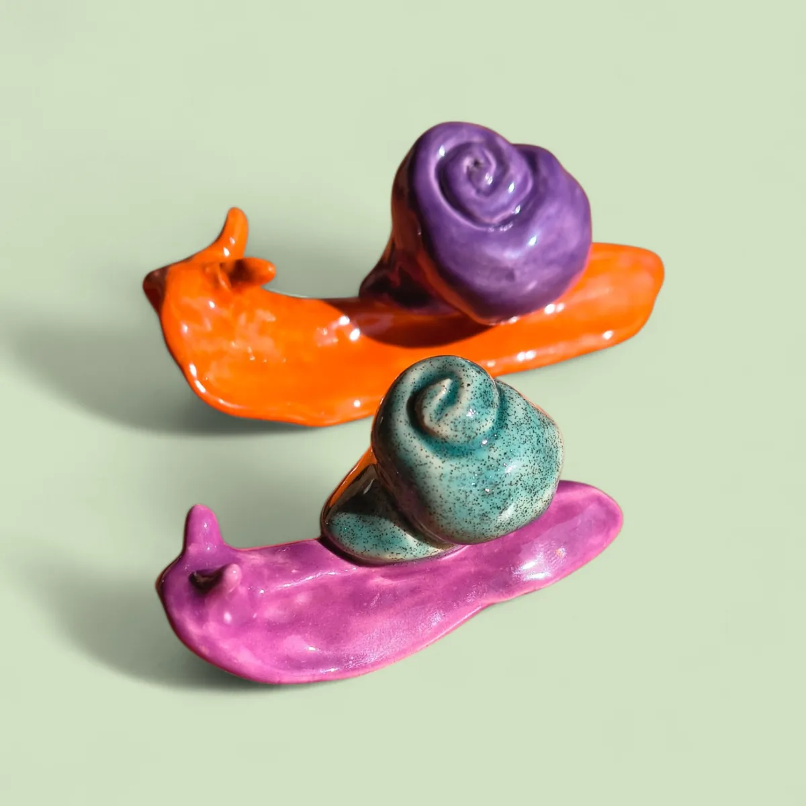

Slakken

Vrolijke slakken in verschillende formaten voor op de muur, op het plafond of waar je m maar leuk vindt.
Terug naar alle producten

Vrolijke slakken in verschillende formaten voor op de muur, op het plafond of waar je m maar leuk vindt.
Terug naar alle producten